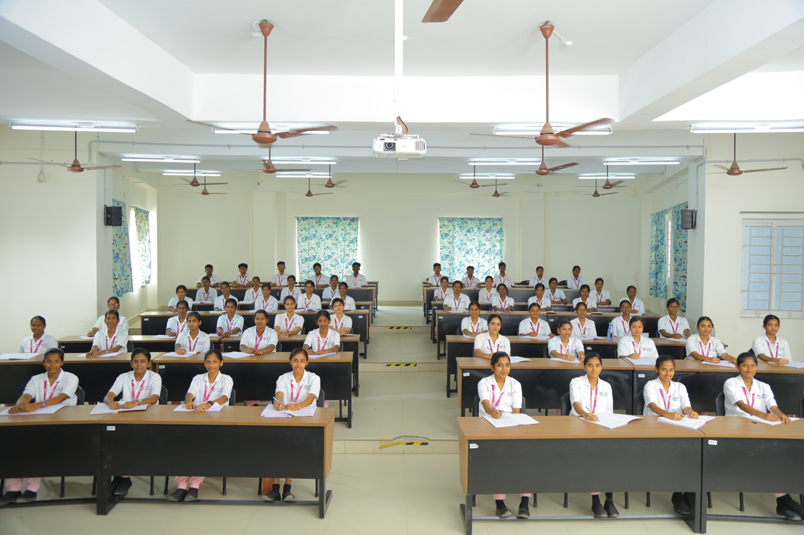
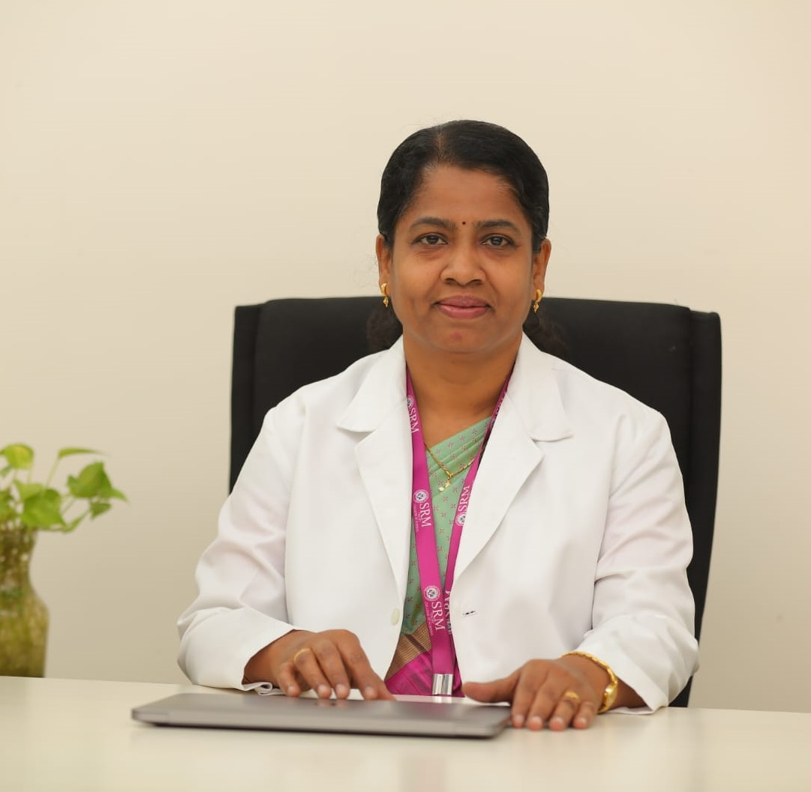
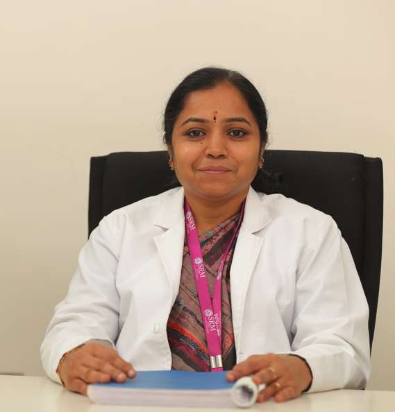

Dr. R. Shivakumar
Chairman
SRM Ramapuram & Trichy Campus
SRM Trichy College of Nursing is a member of SRMIST Trust.The college was started in 2018 and is located at Trichy–Chennai Highway near Samayapuram in a green and spacious campus.Students are encouraged to participate in curricular, co-curricular and extracurricular activities to become globally competitive nursing professionals.

Chairman
SRM Ramapuram & Trichy Campus
Co-Chairman
SRM Ramapuram & Trichy Campus
To prepare students to become empathetic, dedicated and compassionate healthcare providers and make the institution known for its research skills that transform lives.
Promote high quality education with global outlook.Encourage lifelong learning and professional development.Foster innovative research benefiting humanity.Create compassionate healthcare providers for society.Develop leadership and self motivation among students.
It's my immense pleasure to welcome you all to SRM TRICHY COLLEGE OF NURSING and I am happy to mention that it has set new standards in self-reliance. Nurses competence is based on the knowledge and skill taught to them that enable the students to acquire the knowledge, and attitudes for providing nursing care. We are conscious in our responsibility and accountable to deliver competency based multi-disciplinary learning program to equip the students to meet the present and future challenges. They receive care giving, and the hospital environment plans are made for them to visit the hospital and to get acquainted with the clinical learning environment before they begin the actual internship. In SRM TRICHY CAMPUS the students are encouraged to involve in various co-curricular, extra-curricular activities, and community service have donned the mantle successfully and also helps to explore themselves from within, to develop themselves physically, mentally, intellectually and spiritually. When they leave, they shape themselves known as a good human being, a true nurse with a spirit of love, share and care, and fully equipped with all the skills to face the challenges that would await for them in the open world. I would like to appreciate the faculty members who use active and collaborative learning techniques. Engage students in experiences, and emphasize higher- order cognitive activities. The students those who got admission are fortunate to have been blessed with the opportunity of receiving education and spending their formative years in the beautiful SRM TRICHY CAMPUS where nature abounds in its full glory. We encourage the students to make the optimum use of the facilities available here for their growth and learning

SRM Trichy College of Nursing is a unit of SRM IST Trust, our college is located in healthy and ecofriendly campus and credit goes to our honorable Chairman and other elite college management. We believe that Modern Nursing has evolved from the era of Florence nightingale, since the nursing profession firmly holds its noble values of love, care and compassion .We strongly acknowledge that Nursing students are accountable & responsible for rendering high quality nursing care, thus we appoint highly qualified & committed Faculty to provide knowledge and skill needed to the students in meeting the today’s challenges.Hands on clinical experience that our students receive in the 1575 bedded parent hospital with in the same premises is an added advantage to all the students studying here. Our students are given the opportunity to strengthen their problem solving skills and critical thinking abilities. They are proactively involved in the community outreach activities in the prevention of illness among the public.
Our institution is very unique in imparting knowledge and skill in the scope of clinical research. We motivate our students and faculty to involve themselves in adapting latest strategies in health care arena. I am sure that SRMTCON graduates will develop not only good personality but with grandeur of cognition, kind and proper attitude. As the Principal of this college I am sure and looking forward to see our institute to be recognized as one of the premier Nursing institution in our country .Our college is very distinct in the provision of knowledge& practical expertise in the area of Clinical Research and Development.We encourage our faculty & students to take an active lead in adopting innovative strategies of health. I am confident that SRM Trichy College of Nursing will be beacon of light guiding the destiny of its students, with radiating kindness & compassion in its pursuit of academic excellence & execution clinical care.

I am honored to share this message and highlight our college to fostering academic excellence, character development and a nurturing environment for all.
Our institution thrives on dedication from our talented staff, supportive parents, and enthusiastic students. We emphasize holistic growth through innovative teaching, moral values and a love for learning that prepares students for future success. I extend sincere gratitude to all management members and principal for their guidance. The team for their unwavering support, and students for embodying our motto of academic excellence.Together, let’s continue shining highly in this journey of education and discovery
Approved by INC & affiliated to TNMGRMU — blending rigorous academics with clinical training.
Eligibility: 10+2 with English with minimum 40%.Only female candidates eligible.
Medical Surgical Nursing, Paediatric Nursing, Psychiatric Nursing, Community Health Nursing.
Eligibility: 10+2 with English with minimum 40%.Only female candidates eligible.
10+2 with Physics, Chemistry, Biology. Minimum 45% marks. Age 17–35 years as per INC guidelines.
Complete online application on our portal. Upload scanned documents and passport photograph.
Attend state counselling per TN government schedule. Rank-based allotment for government quota seats.
Report with originals, DD for fees, and medical fitness certificate from a registered doctor.